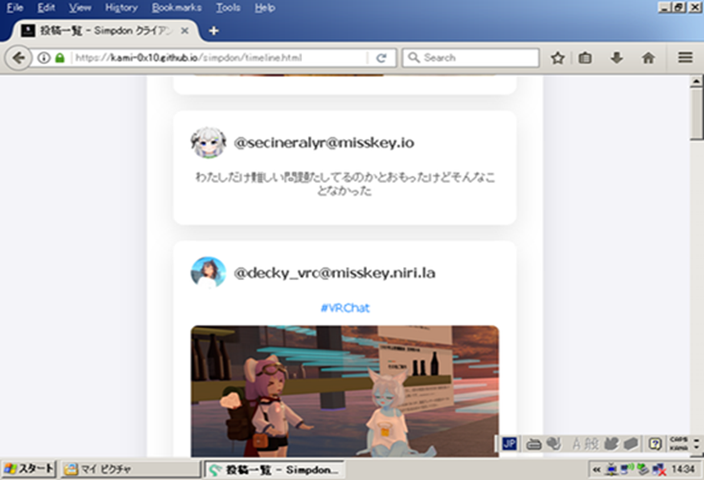
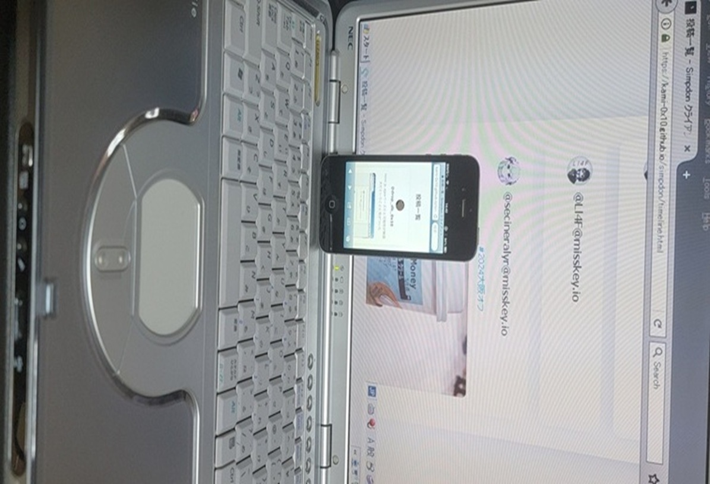
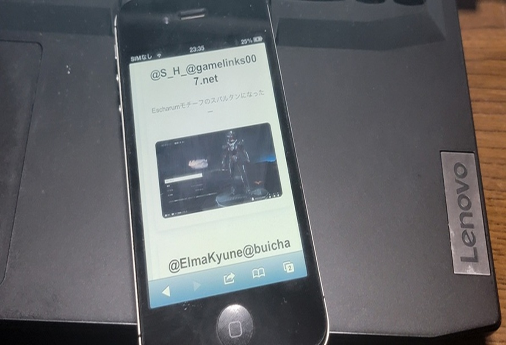
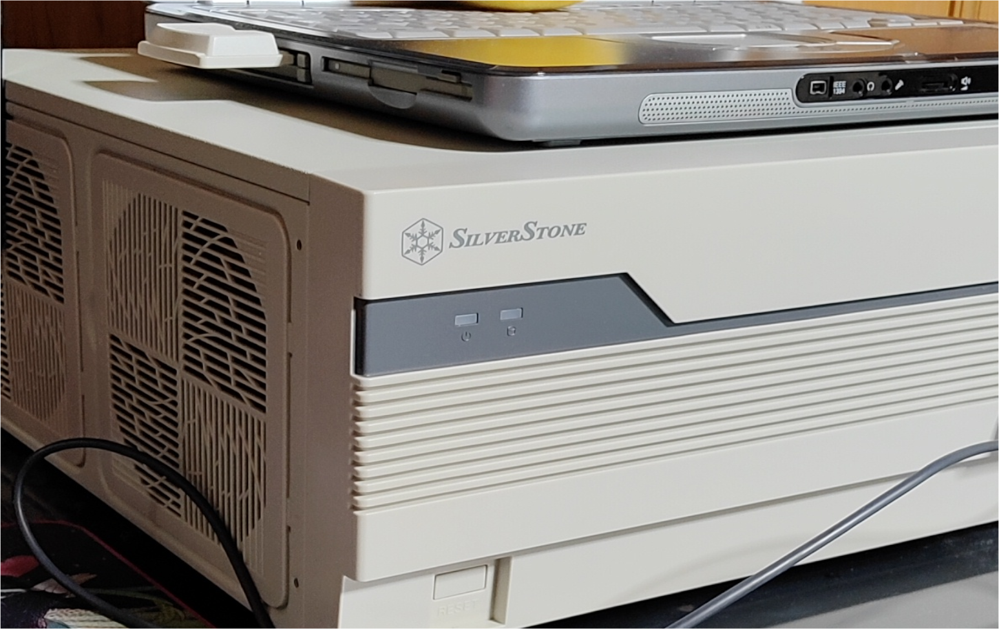
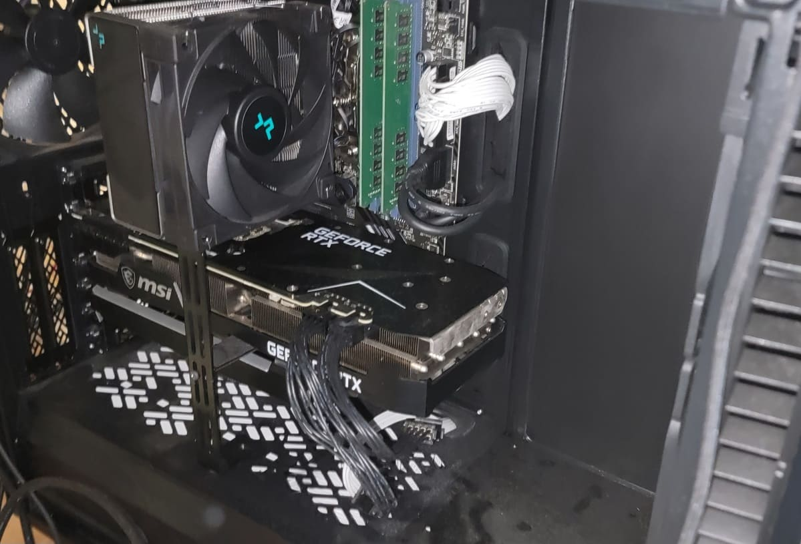
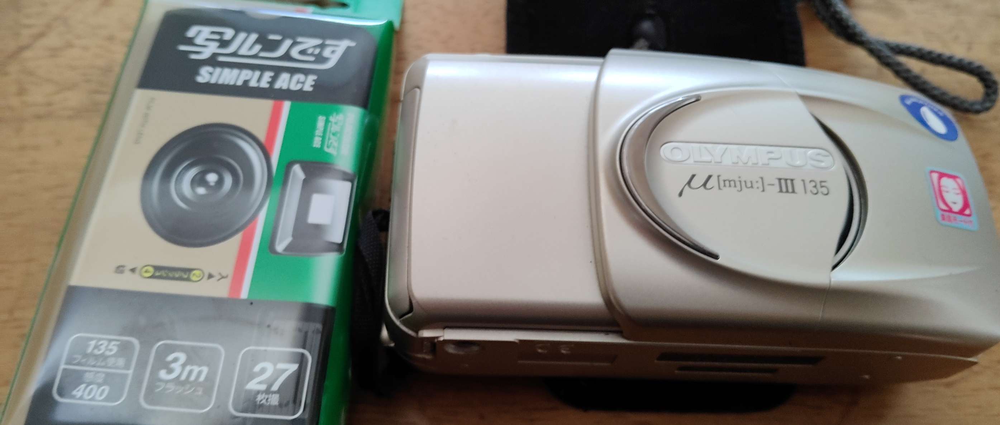
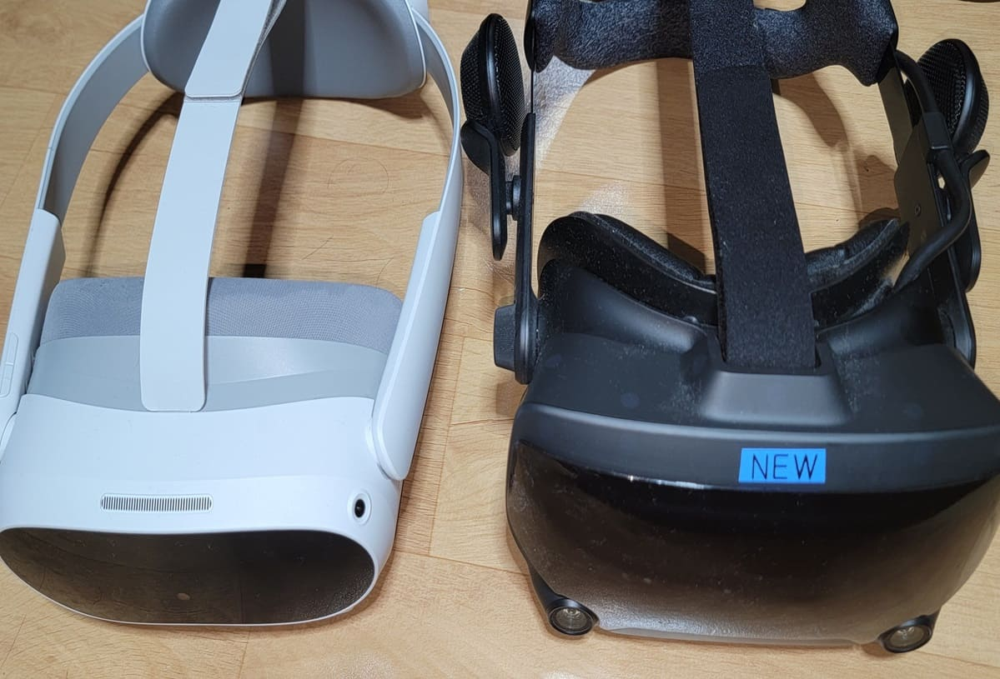
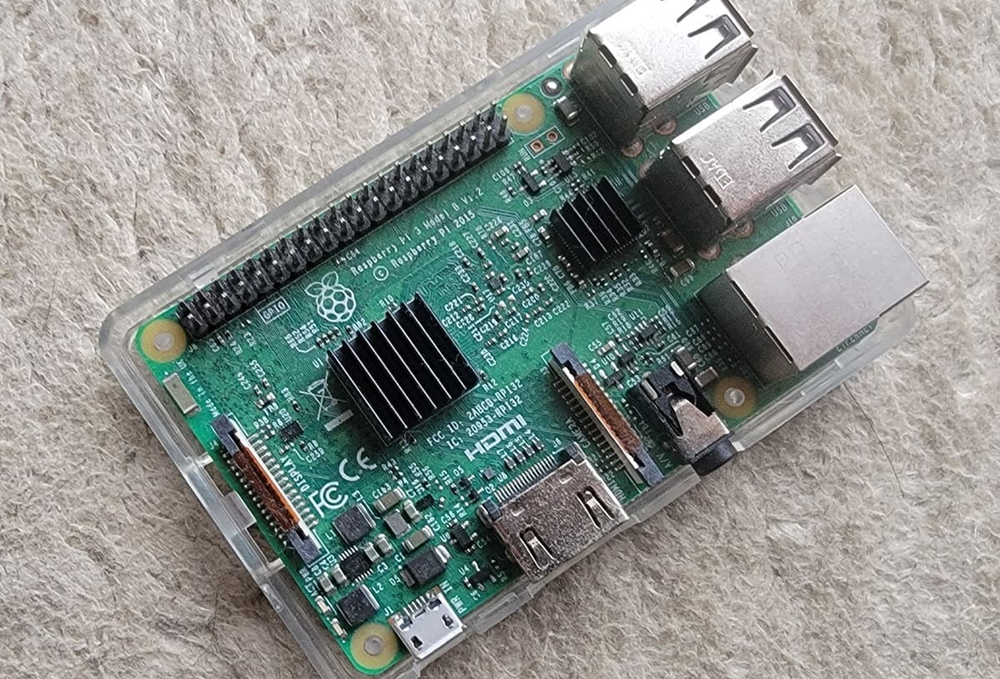
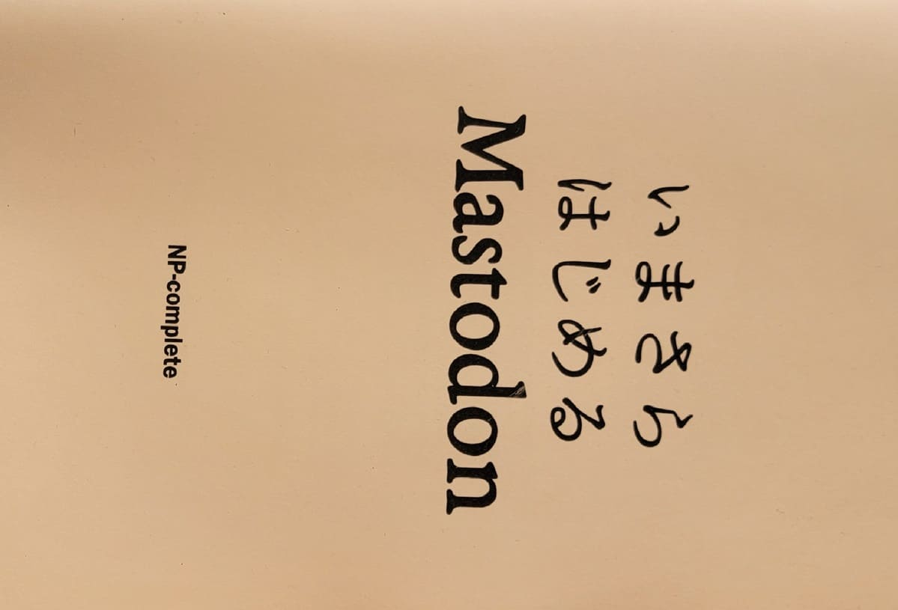
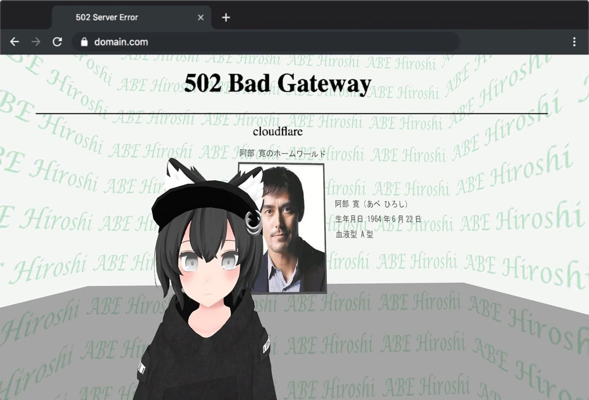

Profile
kami-0x10
中学時代、父親が買ってくれたコンピュータを手に取り、触り、どはまりし、そこからプログラマーの道を目指し、
高校生の頃、一緒に遊んでいたSNS仲間に誘われて、OSC(Open Source Conference) に参加し、
理解を深め、趣味でSNSサーバを開設いたしました。
Ubuntu Server 18.04LTS等のOSを触りながら理解を深め、そこそこできるようにまで成長し、
専門学校時代はLinuxコマンドで困り果てたクラスメイトを一からレクチャーし、教えたこともあります。
中学時代
中学時代、コーディング経験はあまりなく、比較的簡単なhtml、cssをつかったかなりシンプルなサイト作りがメインでしたたまにではありますが、Unity3Dを使ったゲーム作りを小規模ながら趣味の範囲で作っておりました。
高校時代
高校時代はクラス一のPC好きで、クラスの女子にPCスキルをレクチャーしたり、充電コードを忘れた友人にコードをお貸ししたりしておりました。技術面では、当時Twitterに嫌気がさし、2017年(第一次マストドン全盛期)にマストドンという誰でもSNS管理者になれる
プログラムに手を出し、運営していたことがあります。
ちょうどその時期にOSC(オープンソースカンファレンス)に参加し、情報交換したり、
学校外の友人が増えたりしました。
専門学校時代
専門学校に入学する少し前に新型コロナウイルスが流行してしまい、大変でしたが、ありがたく、大宮にある専門学校に入学する運びとなりました。そこでは、Cをはじめ、JavaやPythonといった言語を学び、理解を深めました。
専門時代は挫折も多く、１０年くらい続けていたプログラミングスキルが役に立たず、クラスメイトと比較してしまうことが多々ありました。
それでも私は、
「中学時代から夢見ていたこの業界で生きていく」
と思い、決心し、紆余曲折ありましたが無事卒業を迎えることができました。
社会人になってからの成果物



XPやiOS6等の古いデバイスで動くSNSクライアントを製作
リンクテスト用アカウントurl: https://mstdn.social
アクセストークン: jDUt6DxXL3kC3xIaQXceEC8pXGaSkzQaWTfwgzftfJM
テスト用アカウントですのでアクセストークン等、他言しないようお願いいたします。
Favorites
いろいろあります。
PC組み立て、VR、ガジェット、カメラ、ゲームなど
Works And Likes

レトロな雰囲気が好きなので、鯖用PCをレトロケースで組立

自分で組立てた自作PC

コレクションのフィルムカメラ

趣味で使用するVR機器

昔、専門校時代に触ったラズパイ

趣味関係で頂いた技術専門書

VRChat(1)上に存在する阿部寛(2)のホームワールドにて
開発環境(趣味で始めたゲーム鯖含む)
2: 非公式のファンメイドワールドです。
Others...
他にも、VRChat用に作成したアバター内で動画もどきを流せるAssetも作っていたりします。
プログラムとアニメーションは全部自分で作り上げました。
一応、プログラムの作成上、使用した動画ファイルと楽曲は作者公認、使用許諾取得済みですが、DLする際は、個人利用の範疇でお願いいたします。
ダウンロード
Skills
SQL
インターン先でPHPと共に少し触りました。
インターン先ではMYSQLを触っておりました。
趣味でやっていたSNSサーバと専門学校時代のチーム課題で使用していたDBソフトはPostgreSQLを使用しておりました。
HTML
このポートフォリオはHTML、CSS、JSを使用し作られています。
Python(3x)
Pythonは専門学校時代、必修でした。
主に、3x系統の記述方法で勉強いたしました。
私が最近作成したプログラムは、3D製図ソフト内で使用可能なPythonを使用し、
テキストファイルを別形式に置き換えるものでございます。
それ以外にも祖母が昔使っていたガラケー向けに画像の解像度を落とすプログラム等を作っております。
卒業制作の際、SpringBootを使用し、勤怠管理システムの仕組みを勉強いたしました。
下記のPHPスキルシート欄にも書きましたが、MVCモデルを改めて勉強するきっかけになった言語でもあります。
Java
Javaは専門学校時代に授業のカリキュラムで学びました。
授業では、専門学校での学びが、Javaに関する基礎知識を深めることにつながりました。
特にプログラミングの楽しさや、問題解決に向けたアプローチを考える過程に魅力を感じています。
クラスやオブジェクトを使ったデザインパターンに興味を持ち、
実際のプロジェクトでどのように活用できるかを考えながら学習を進めてきました。
また、チームでのプロジェクト経験も大切にしており、
協力し合うことでより良い成果を生み出すことの重要性を実感しました。
周囲とのコミュニケーションを大切にしながら、自分のアイデアを柔軟に取り入れていく姿勢を心掛けています。
今後も技術を磨きながら、チームと共に成長していける環境で挑戦していきたいと思っています。
C
C langは専門学校時代に必修であったため一通り勉強いたしました。
特にメモリ辺りの理解が難しかったです。
C langは基礎知識の塊だと認識しているので"要"かなと思っております。
C#
C#は、ゲーム開発に興味があったので、Unity3Dを自家用PCに入れて触りました。
私が触った領域はあくまでもUnity3DのC#であったため、勉強しがいがあるかなと思っております。
PHP
PHPはインターン先で少し触れました。
インターン先ではPHP Laravelを使い、ECサイトの大まかな仕組みを勉強させていただきました。
その際、MVCモデルと言ったウェブサイトのコードを分割する仕組みについても同時に勉強いたしました。
結果、専門学校時代に行った卒業制作で勤怠管理システムを作るといった事に対し、円滑に対応できたかなと思います。